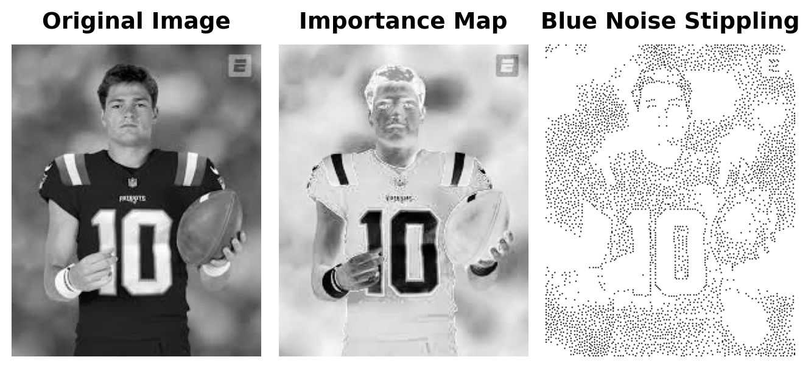
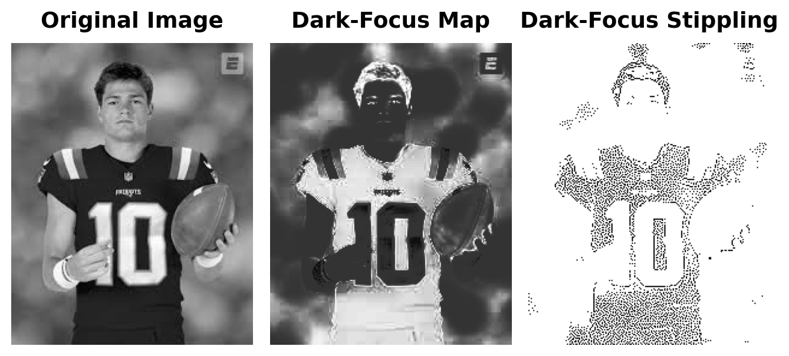
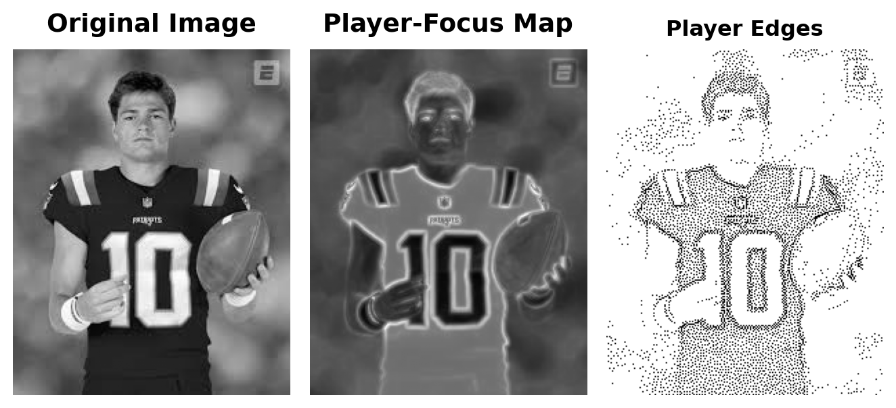
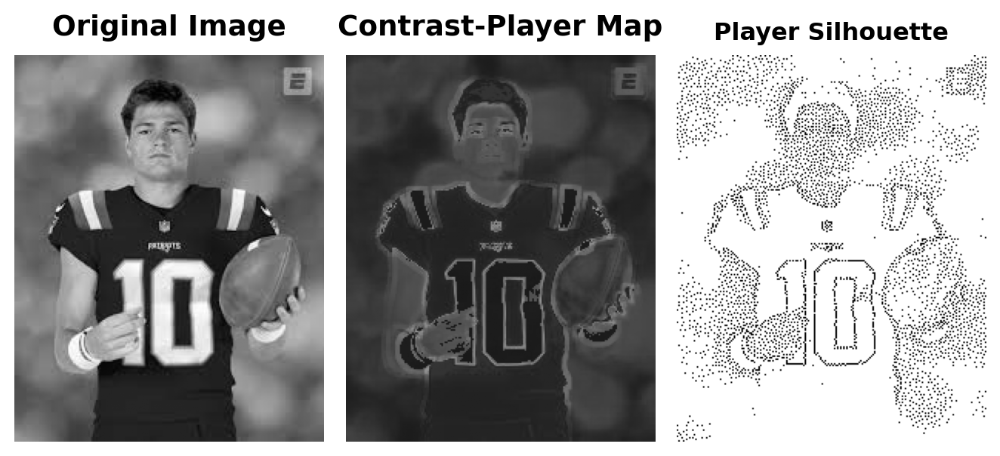
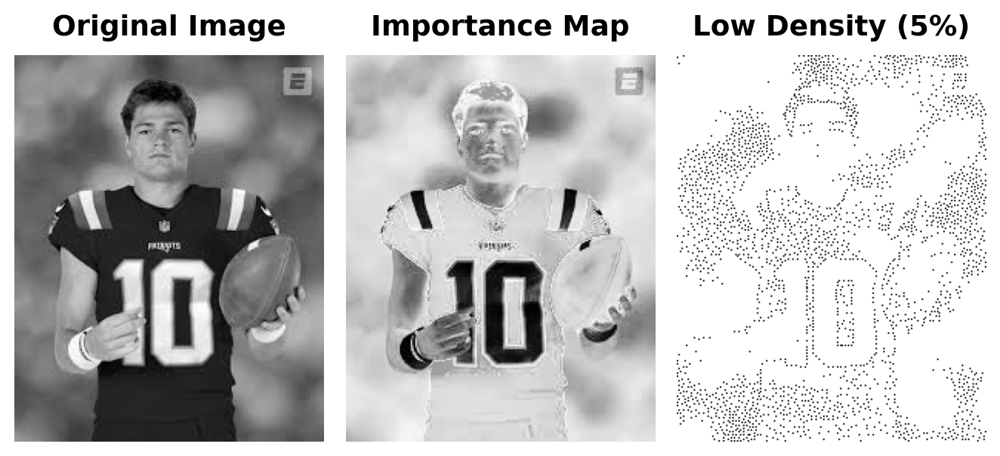
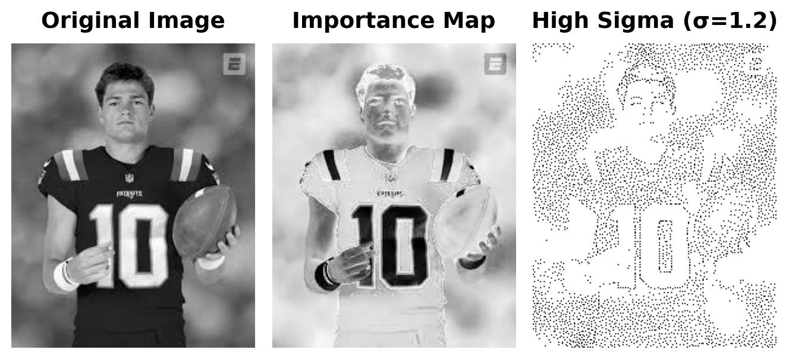
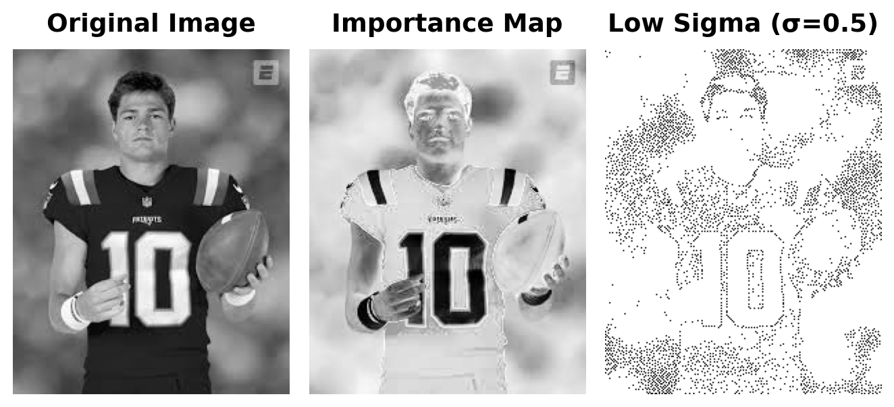
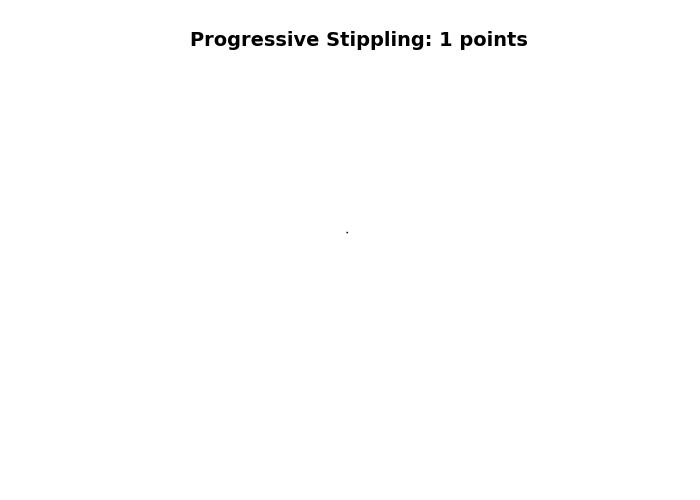

Image shape: (251, 201)
Image size: 251x201 pixelsBlue Noise Stippling: Creating Art from Data
Core Question: How can we convert a photograph into an aesthetically pleasing pattern of dots that preserves the visual information of the original image?
The Challenge: Blue noise stippling is a technique that converts images into patterns of dots (stipples) using algorithms that balance visual accuracy with spatial distribution. This challenge asks you to implement a modified “void and cluster” algorithm that combines importance sampling with blue noise distribution properties to create stippling patterns that are both visually accurate and spatially well-distributed.
Our Approach: We’ll use a modified void-and-cluster algorithm that: 1. Creates an importance map identifying visually important regions 2. Uses a toroidal (periodic) Gaussian kernel for repulsion to ensure blue noise properties 3. Iteratively selects points with minimum energy 4. Balances image content importance with blue noise spatial distribution
Blue noise stippling is a technique for converting images into a pattern of dots (stipples) that preserves the visual information of the original image while creating an aesthetically pleasing, evenly distributed pattern. This method follows the approach described by Bart Wronski.
The method uses a modified “void and cluster” algorithm that combines importance sampling with blue noise distribution properties to create stippling patterns that are both visually accurate and spatially well-distributed. This version uses smooth extreme downweighting that selectively downweights very dark and very light tones while preserving mid-tones, creating a more balanced distribution of stipples across the image.
First, let’s load an image that we’ll convert to a blue noise stippling pattern. You can use any image you’d like, but we’ll demonstrate with the provided example.
Image shape: (251, 201)
Image size: 251x201 pixelsBefore applying the stippling algorithm, we create an importance map that identifies which regions of the image should receive more stipples. The importance map is computed by:
The stippling algorithm uses a modified void-and-cluster approach that:
Before generating the stippling pattern, we prepare the image by resizing if necessary and computing the importance map.
Final image shape: (251, 201) (should be 2D for grayscale)
Importance map computedNow let’s apply the stippling algorithm to create the blue noise stippling pattern.
Generating blue noise stippling pattern...
Generated 4036 stipple points
Stipple pattern shape: (251, 201)Let’s visualize the original image, the importance map, and the stippled version side by side for comparison.

Let’s experiment with different parameters and approaches to see how they affect the stippling results.
This experiment modifies the importance map to strongly prioritize darker areas, creating stipples that emphasize shadow regions.
Image shape: (251, 201)
Generating stippling pattern (dark focus)...
Generated 4036 stipple points
Changes & Why: - No Brightness Inversion: Removed 1.0-img inversion (dark areas naturally get higher importance) - Tighter Parameters: extreme_sigma=0.05 (sharper downweighting), mid_tone_sigma=0.15 (focused boost) - Enhanced Mid-tone Boost: Centered at 0.2 brightness with 80% weight for dark mid-tones - Reduced Extreme Downweighting: 0.15 (vs 0.2) to maintain some contrast - Why: Strongly emphasizes dark areas (jersey) while preserving mid-tone details, creating shadow-focused stippling
This experiment uses edge detection to emphasize the player’s silhouette and features, making him stand out from the background through contrast enhancement.
Image shape: (251, 201)
Generating edge-enhanced stippling pattern...
Generated 5045 stipple points
Changes & Why: - Edge Detection: Added Sobel operator edge detection to find boundaries - Local Contrast: Measured variance in 5x5 windows for high-contrast areas - Combined Boost: Edge + contrast signals added to base importance (60% weight each) - Higher Density: 10% points (vs 8%) for more detail on player features - Balanced Sigma: 0.8 for good clustering without over-smoothing - Why: Emphasizes player silhouette through contrast enhancement, making him pop from background
This experiment creates an importance map based on local contrast patterns, boosting areas where bright regions (player’s skin) meet dark regions (jersey), creating a silhouette effect.
Image shape: (251, 201)
Generating contrast-based player stippling pattern...
Generated 4036 stipple points
Changes & Why: - Local Range Analysis: Used 7x7 sliding windows to measure brightness range (max-min) - Medium Brightness Focus: Gaussian boost centered on 0.5 brightness for skin-jersey boundaries - Dark Area Boost: Additional emphasis on pure dark areas (jersey) with tight sigma (0.15) - Background Suppression: Reduced importance for very bright areas (background) by 70% - High Content Bias: 0.95 (vs 0.9) for better shape preservation - Why: Creates figure-ground separation by isolating high-contrast player regions from uniform background
This experiment uses a higher percentage of stipple points (12% instead of 8%) to create denser stippling.
Generating high-density stippling pattern...
Generated 6054 stipple pointsChanges & Why: - Higher Density: percentage=0.12 (vs 0.08) for 50% more stipple points - Same Parameters: All other settings identical to baseline (sigma=0.9, content_bias=0.9) - Why: Creates denser, more detailed stippling with finer granularity, revealing more image features
This experiment uses a lower percentage of stipple points (5% instead of 8%) to create sparser stippling.
Generating low-density stippling pattern...
Generated 2522 stipple points
Changes & Why: - Lower Density: percentage=0.05 (vs 0.08) for 37% fewer stipple points - Same Parameters: All other settings identical to baseline (sigma=0.9, content_bias=0.9) - Why: Creates minimal, artistic stippling that captures essential shapes with fewer points, emphasizing bold contrasts
This experiment uses a higher sigma value (1.2 instead of 0.9) for the blue noise generation, creating more clustered stippling patterns.
Generating high-sigma stippling pattern...
Generated 4036 stipple points
Changes & Why: - Higher Sigma: sigma=1.2 (vs 0.9) for blue noise generation - Same Parameters: All other settings identical to baseline (percentage=0.08, content_bias=0.9) - Why: Creates more clustered stippling with larger spacing variations, producing a more organic, less uniform distribution
This experiment uses a lower sigma value (0.5 instead of 0.9) for the blue noise generation, creating more dispersed stippling patterns.
Generating low-sigma stippling pattern...
Generated 4036 stipple points
Changes & Why: - Lower Sigma: sigma=0.5 (vs 0.9) for blue noise generation - Same Parameters: All other settings identical to baseline (percentage=0.08, content_bias=0.9) - Why: Creates more dispersed stippling with smaller spacing variations, producing a more uniform, grid-like distribution
-The different parameters affect the result in different ways. Some emphasize the dark jersey areas, some emphasize the player silhouette, some emphasize the background, some emphasize the mid-tones. There are also different levels of clustering done depending on parameter settings. All these affect how much or little Drake pops out from the background and his jersey. The best results came from the original, the high density, and the player edge focus settings. These settings created the most balanced and visually pleasing results. ####
This section creates a GIF showing how the stippled image looks as more points are added sequentially. We’ll use the already-computed stippling points to generate frames at increments of 100 points.
Using existing stippling with 4036 points
Image shape: (251, 201)
Generated 42 frames
Point counts: [1, 100, 200, 300, 400, 500, 600, 700, 800, 900, 1000, 1100, 1200, 1300, 1400, 1500, 1600, 1700, 1800, 1900, 2000, 2100, 2200, 2300, 2400, 2500, 2600, 2700, 2800, 2900, 3000, 3100, 3200, 3300, 3400, 3500, 3600, 3700, 3800, 3900, 4000, 4036]Now let’s create the GIF animation:
